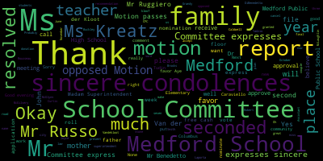
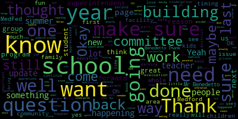

AI-generated transcript of Medford School Committee meeting September 9, 2019
English | español | português | 中国人 | kreyol ayisyen | tiếng việt | ខ្មែរ | русский | عربي | 한국인
Back to all transcripts
Heatmap of speakers
[Burke]: A meeting of the Medford School Committee will now come to order. The secretary will call the roll.
[cflR-3VqII8_SPEAKER_20]: Member DiBenedetto. Present. Member Kress. Here. Member Bustone. Here. Member Ruggiero. Present. Member Ruseau. Present. Member Van Der Kool. Present. Commander.
[Burke]: Present. Seven present, none absent. All please rise and salute our flag. I pledge allegiance to the flag of the United States of America, and to the Republic for which it stands,
[SPEAKER_20]: Under God, indivisible, with liberty and justice for all.
[Burke]: Thank you. Approval of the minutes of June 24, 2019. Is there a motion on the floor for approval? Motion to approve. There's a motion to approve by Mr. Benedetto. Is there a second? Second. Seconded by Ms. Kreatz. All those in favor? Aye. All those opposed? Motion granted. Approval of bills, transfer of funds. Motion to approve.
[DiBenedetto]: Second. Mayor Burke. I had a few questions if you don't mind. Sure. Thank you. Mr. Benedetto. Thank you. On page first, I have a few. My stickies work. As usual, right? On page 7 of 17. The National Grilled Bill for 16-2802, it's unclassified. I just didn't know why it would be unclassified. Maybe it was just before. It's like the fifth one down.
[Patterson]: Yes, so that's regarding a revolving account, so the term is called unclassified for its general expenditures for the particular account. Thank you.
[DiBenedetto]: On the next page, 8 of 17, I had a question regarding school, a third of the way down, under Trotter-Richard, $290.12 school committee superintendent's dues.
[Patterson]: So he was part of the superintendent's conference, MAASC, this year, and he was part of the hosting of the CCSR project down for the Cape, so that was reimbursement for some of his
[DiBenedetto]: expenses Okay, I know that mr. Trotter retired from the school district and is still is he the director of the CCS are still yes And so he would go to that before the CCS are correct. Okay, just just clarifying but further down the row Christine Sweeney for the amount of $250 lost books I've had deductibles and
[Patterson]: Yes, so that would have been a reimbursement from that revolving account.
[DiBenedetto]: And then on page 10 of 17, fourth one down, CT book holdings, it says pending classification.
[Patterson]: Again, this is another separate fund. It's a trust fund. So it doesn't have a particular breakout. It's just one line for expenditures. So it's considered unclassified based on what they're using it for.
[DiBenedetto]: OK, great. In that, oh, one more, sorry. On page 14 of 17, second one down. It says $1,868 undistributed errors and omissions for RR Rudy insurance.
[Patterson]: Correct. That's insurance errors and omissions insurance for school committee policies.
[DiBenedetto]: Oh, okay. I just, when it said undistributed, I just, okay. Thank you. Those are all my questions. Thank you for always answering them. Motion to approve.
[Burke]: There's a motion for approval. Ms. Vandekloot, you have to hit your button. Ms. Vandekloot. We have a new system up here. We're trying to get into place. Ms. Van Kloot.
[Van der Kloot]: Christine, I'm only mentioning this just so that in your records it doesn't cause you a problem down the line. You've got a typo on page 10 of 17, Greater Boston League. It should be G-R-E-A rather than A-E.
[Patterson]: OK. So that is the vendor. So we'll get that adjusted and corrected. Yeah, just a typo. Thank you. Thank you.
[Burke]: Very good. On the motion by Mr. Benedetto, is there a second?
[Van der Kloot]: Second.
[Burke]: Second by Mr. Russo. All those in favor?
[Van der Kloot]: Aye.
[Burke]: All those opposed? Motion passes. Thank you. Report of secretary. None. Report of committees. None. Community participation. None. Report of the superintendent. The superintendent's updating comments on the opening of school. Madam Superintendent, let me get these Sorry, superintendent. Here you go, ma'am.
[Edouard-Vincent]: So good evening, everyone. I'd like to say welcome back to year two for me, but an exciting new school year. I can't believe how time flies by. I've had the honor of serving as your superintendent for a full year now, and I'm looking forward to continuing our work together as we move the Medford public schools forward. We are one Medford, one district. A new school year always brings with it new members of our school community. So I would like to take this opportunity just to officially introduce some of our new administrators that are here with us today and recognize them. If you are here, please feel free to stand. Our new assistant superintendent, Dr. Peter Cushing. who will be focusing on our secondary, middle, and high schools. Our new Director of Pupil Services, Ms. Joan Bowen, who replaced Kathleen Madaglio, who retired in June. And for the past six years, Director Bowen served as the coordinator of secondary special education and transition programs for the Medford Public Schools. We have a new assistant principal at the Andrews Middle School, Julia McEwen, who replaced Dave DiMattea, who retired in June. At the Curtis Tufts School, we have a new principal, Miss Lisa Kingsley, who began her duties officially today. She replaces Brian Toomey, who transitioned to a new role in another district. We'd like to recognize Alice Beth Fitzpatrick, a Medford High School guidance Councilor, who was appointed as assistant director of CTE programs for the Medford Vocational Technical High School. Maureen Lavin, who is a veteran and middle and high school educator in Medford Public Schools. She was appointed to temporarily fill the director of guidance position to cover a long-term leave. Lisa Ionelli, who was appointed our coordinator of secondary special education programs at the high school, replacing Joan Bowen's position. And we'd like to recognize Lauren Perillo. who was appointed coordinator of special education programs at the Columbus, McGlynn, and Andrews middle schools, replacing Lisa Ionelli. So we had a lot of movement happening, but I just wanted us to take this time to formally welcome all of our new additions to the Mustang family. So at this time, Over the course of the summer and at the start of the school year, we had many, many wonderful partners from the community. Team Medford and other parts of the community that are supporting our schools. And we wanted to recognize and say thank you. And so some of our wonderful community partners have actually come out today to give us this opportunity to recognize them. So I wanted to ask if Miss Diane Caldwell could come forward just so that we could formally thank the many friends and partners who have supported Medford Public Schools in a very generous way.
[Burke]: Ms. Caldwell.
[Caldwell]: Thank you and welcome back everyone. It's really good to be back, although I don't really feel like I left that much. So we are so very lucky to have partnerships with various different corporations and companies in Medford. But I'd like the team to please, all of you, come up now, starting with Sam Tarabelsi. Sam has been with Hallmark Health, and Sam, this is our 12th year? 12th year and counting, we never let Sam go. I remember Beverly Nelson saying for many, many years that she can't wait for the phone call from Mr. Terrabelsi to say, we're coming back. What all of these incredible people do behind us, and I know that you have the list.
[Edouard-Vincent]: I'm going to say their names. OK. Sam Terrabelsi, who's the director of infrastructure. Miss Sue Sandberg, who's the CEO. Can you please wave so everyone knows who you are? Thank you, Sue. We have with us Janet Peralt. Thank you, Janet. We have from WB Mason, Stephanie Altavesta. And from Armstrong Ambulance, Mr. Davin Forse, operations manager.
[Caldwell]: So as you know, the beginning of the school year is always difficult for some of our families. In our school buildings, when we know we have 150 to 200 backpacks just jam-packed with school supplies and materials for our students, not only does that help our kiddos, it really helps the teachers and the families of our community. And so every year we welcome them back with open arms and say, thank you so much for all you do. Mr. Terrabelsi, would you like to say a few words?
[SPEAKER_01]: Thank you again, Diane. It's always a pleasure. I go back 12 years ago when I first said that we're doing this for the first year, and that I will be back. So I kind of meant it. And I hope I continue to do that. So really, it's a pleasure. I mean, these guys, again, from WB Mason, our new partner and really major sponsor. We have Armstrong who is on our team but always there for us. And then my teammate in the team at Medford that we go out to all the community events and we really And this is a special event for us. I mean, it's back to school drive. That really gets me excited. And I'm always thinking ways to contribute to the cause. We also have the Method Kiwanis that, you know, even though I'm a member, I can really kind of get the money out of these guys to really contribute to these students. And they've been tremendous. Tremendous. We've had the Rotary in the past, and we will continue to get sponsored. But most importantly, again, and I want to make sure, our CEO, Sue Sandberg, who joined our organization, Meadows Wakefield Healthcare, and really, you know, to take the time and to be here, so special to me, to Janet, to all of us, because it really means a lot to us that we're doing the right thing for the community and for the students and for the school system. So, anyway, thank you. Sue, do you want to say a few words?
[SPEAKER_20]: Okay, now I know you guys have been here a long time, so I would just say, I'm like you, I've been in the role now a year, and I still get giddy, though, when I hear first day of school, back from the days my kids started. But I will just say Melrose-Wakefield Healthcare really is committed to a community, and when you talk about supporting children, they are our future, so we are so glad to stand up, and to stand up with Armstrong. We get to work with them on a daily basis around patient care, So it's fun to be in a project like this where it's about the future of our children. And they're the ones that will be taking care of us in the future. And of course, it's fun to have someone that we actually buy material from to step up and also help donate. So it's fun to have partners and our vendors too. So appreciate everyone here tonight and wishing you guys just a most awesome school year ahead. Thank you. Thank you so much.
[Burke]: On behalf of the school committee, we want to thank Team Medford for all of your work and really being there year in and year out. It means so much, not only to us, but the children of our community. So thank you all very, very much.
[Edouard-Vincent]: I also have a few additional pointers that I want to just bring up as well. When I mentioned the extreme generosity, the generosity of the business community has been great. In addition to what Team Medford just presented, their sincere dedication to us, we also received a generous donation from Wegmans. of 200 backpacks that were filled with school supplies. And they came to the school and dropped them off and backpacks were sent out. And in addition to Wegmans, we had another partner, a friend of the community, a Jero that has been working with Medford Public Schools for a very, very long time. They also donated an additional 200 backpacks with school supplies. And as we present additional reports to you this evening, you'll continue to hear our partners and how we say thank you to Joseph's Transportation and many other good partners in the community that are supporting what's happening in Medford Public Schools. Over the summer, we had two first ever events. Many of you were able to come and support that. We had our sixth grade welcome barbecue. And we had our summer Medford High School graduation. So I just wanted to mention that in my opening remarks to thank all of you who were able to support us. It was a fun event. We were very grateful. The weather was very cooperative. We were working hard, working collaboratively as a team. And both principals, Principal Tucci and Principal Downs, Associate Superintendent Diane Caldwell, Director of Curriculum Bernadette Riccidelli, Andrew's Assistant Principal Julia McEwen, and McGlynn Assistant Principal Jody Lu, our Public Relations Director Lisa Evangelista, school committee members Kathy Crux, Mia Mastone, Paulette VanderKloot. They were able to jump in and help serve that day with food. We want to thank the city's Department of Public Works. They came out, they cleared the area, they cleaned it, made it ready for the barbecue, and they came back and they collected whatever trash was left over. So we're truly appreciative of the collaborative effort. And once again, Wegmans stepped up and Wegmans provided, graciously provided all the water and sports drinks to all of our students for that evening. And we had a collaborative effort of both PTOs, middle school PTOs, parents chipping in to make it such a wonderful event, and teachers working as well. So we were really, really appreciative of that. And our high school graduation, summer graduation, thank you again. for supporting that event, the headmaster, and all that happened, and you'll hear about that later today. But what I can say is that those students who graduated, they got to feel like they were Mustangs, and Mustangs never give up, even if it was a little later. But we're really proud of them, and I thank you again, the school committee, for your support during the summer months for that special event. I just want to say I'm wrapping up, but today we had another first in our district. Today was the first time we had middle school sports tryouts. So stay tuned. You'll be hearing more about that. But our middle school students had the opportunity. to participate in cross country, baseball, and softball. So tryouts are happening. And as you know, we're part of the Greater Boston League, which includes Malden, Everett, Somerville, and Revere. So we're excited about that. And the first game is September 16th, so you'll continue to hear about what's happening with sports, all things middle school. And last but not least, this is a quick follow-up to one of our students that graduated class of 2017, a very proud Mustang, Mr. Joseph Farrar. And at the end of the school year, last school year, we mentioned that he was working, he was part of the team. Our director of science, Rocco Sieri, had talked about it. But I just wanted to give you a highlight. We are beyond proud that Joseph Farah, a 2017 graduate of Medford High School, and currently a physics major, and at the Honors College of UMass Boston is sharing in a $3 million breakthrough prize. I just felt it was worthy of announcing to all of you for being part of the Event Horizon Telescope, the EHT. collaboration that took the first image of a black hole in April. When the image was recorded, Farrah was the only undergraduate on the 347-member team. As UMass Chancellor Newman stated, what a remarkable scientific achievement for an undergraduate to have contributed to a landmark discovery of this importance is nothing short of astounding. UMass Boston is immensely proud of Joseph Farris' gifts and simply delighted that he has been recognized by this award. So I want to say to all of you, yes, let's give him a round of applause. I am looking forward to another great year, and as always, go Mustangs.
[Burke]: Go Patriots. Thank you so much, Madam Superintendent. Could you also prepare thank yous for all of the various partners from the school committee? Yes, definitely. Thank you. It's a motion to receive this report and place it on file by Mr. Benedetto, seconded by Mr. Russo. All those in favor? All those opposed? Motion carries.
[DiBenedetto]: Could we invite Joseph Farah to come and give him a commendation for his work and his accomplishment and bring him back into the Medford fold. I know his family very well. His brother is also a Medford High School student. The whole family has has excelled in science throughout their career. One of their children graduated with my daughter, Una, and they're a remarkable family. And if we could do some type of presentation for him and bring him back and show all of MedFed how proud we are of our students that step out, because if he's at UMass Boston, he's around, and I think his family would love something like that. We need to celebrate what's happening in MedFed in a big way. We can definitely do that.
[Edouard-Vincent]: Thank you. Dr. Cushing is right there. He's going to push play.
[Burke]: We have a couple of others in the queue. Ms. Kreatz, did you wish to speak on this?
[Kreatz]: No, I wanted to say it was great news. I got to meet him at one of the science fairs and it's just so amazing and it's incredible. What a great story.
[Burke]: Thank you. And Mr. Ruggiero.
[Ruggiero]: I think it would be great if we could have a little presentation. I've seen some of the pictures of the Event Horizon Telescope and it's just amazing to actually see a black hole surrounded by all of this plasma. It would be great if we could get a presentation to our middle school students to get them excited.
[Edouard-Vincent]: So here is a very short, short video. Five minutes on our opening of school.
[Caldwell]: I'm here with us today, Mayor Stephanie Burke.
[Edouard-Vincent]: This is a Super Bowl for our students, that we're going to be the best we can possibly be. So that was my theme, my words of encouragement this year. I know you can do it. I know we can do it together. First day of school. I'm excited.
[SPEAKER_09]: Yeah, you can be the greatest. You can be the best. You can be the King Kong banging on your chest. You can beat the world. You can beat the war. You can talk the talk. You can beat the clock. You can move a mountain. You can break rocks. You can be a master.
[Edouard-Vincent]: a very warm welcome to our new kindergartners. What grade is that? We worked all night to get these colors. Beautiful. Lots of big happy smiles coming through the door. That's what made me feel good. Yes. And our kindergarteners are just amazing. We champions, we truth seekers.
[SPEAKER_09]: We students, we teachers. We politicians, we preachers. We preachers, yeah. We believers, we leaders. We astronauts.
[Edouard-Vincent]: be excited.
[SPEAKER_09]: Are you excited to meet kindergarten?
[Burke]: Okay. Item two. Are we all set? Madam Superintendent? Recommendation to approve donation from Impact Church. Mr. Tucci.
[Tucci]: Good evening, everybody, and welcome back.
[Burke]: Good evening.
[Tucci]: Impact Church, the organization that utilizes the McGlynn School facility with their church community, has graciously agreed to donate an entire Chromebook cart to the McGlynn Middle School. The details of the proposed gift includes 25 Lenovo Chromebooks, 25 Google Chrome management console licenses, and one charging cart. The total amount of the gift would be in the amount of $5,990. Pastor Zenzo, who could not be here tonight of Impact Church, states that it's an honor for us to be able to bring such a blessing to your school. We're grateful to be part of your team. We support everything you do and we're committed to touching the families of Medford together. Thank you for allowing us the opportunity to be a blessing. We sincerely thank Impact Church for their support of the McGlynn Middle School. The importance of this gift would significantly impact our students by continuing our efforts to infuse technology into our classrooms. I'd like to now introduce Ms. Crystal Erb, who is the Impact Church Youth Director. And she's very passionate about helping our church, according to Pastor Zenzo, establish some programming that will impact students, teachers, and schools in Medford. So I'm going to turn the microphone over to Ms. Crystal Erb right now. Thank you.
[Burke]: Good evening.
[SPEAKER_00]: Good evening. How are you all? Hey, we just want to say that Impact Church is super excited to be partnering with this community, with Medford, and with your schools. We have the same mission as the rest of the Medford community, and that's purely just building up families and doing that through equitable education. We also have A strong belief that faith and education can work really awesomely together and that you can't have one without the other. And that faith can fuel education, but you also really need education in your faith. So we as a church believe that these two communities just can go beautifully together and it really is our pleasure to donate and to be part of this community. So we just want to say thank you for allowing us to be in that community. And we are so pumped to just keep partnering with Medford and with your school district. So thank you.
[Burke]: Thank you, Ms. Kristol. As always, you came through last year as well with a sizable donation for us to do some work there. So we really appreciate the partnership. And thank you so much for this. I'm sure the kids will appreciate it as well, and maybe some thank yous from them.
[Tucci]: Certainly. And while I have the microphone, too, as well, I also want to thank Impact Church and Pastor Zenzo for a wonderful donation of a welcome back luncheon for our teachers and faculty the first day back from school. So we're so thankful to have them as wonderful stewards of our building. And I thank you very much for your consideration.
[Burke]: Thank you very much. Thank you. Is there a recommendation to approve the donation from Impact Church? Moved by Ms. Van der Kloot, seconded by Ms. Kreatz.
[cflR-3VqII8_SPEAKER_20]: Roll call vote, please.
[Burke]: Yes, seven in the affirmative, zero in the negative. Motion passes, gift accepted. Thank you very, very much. Next up recommendation to approve liquor permit for m3 outdoor adventures october fells Trail race and festival mr.. Towers present good evening Good evening madam superintendent committee members.
[SPEAKER_22]: How are you? I didn't prepare any official statement, but I do after reading mr. Tucci I wouldn't mind reading from my letter here to the community members about the event yes and Perhaps that could go into the record. So it is our responsibility to provide students with the opportunity to think outside the classroom. As a Medford High teacher and the founder and executive director of M3 Outdoor Adventures, a new Local nonprofit organization, I'm calling upon my communities to spread awareness about our mission to get young people outside. M3 Outdoor Adventures, or M3OA as I like to call it, was founded in 2019 as a youth-centered recreation program linking students in the greater Boston area to the natural world. M3OA mission is to increase student engagement and experience with local green spaces in order to encourage a lifetime of stewardship and appreciation for the outdoors. We are seeking to create and maintain a network of multiple school-based clubs that will work in unison to help students from our schools engage in learning outside the classroom walls. To support our mission, students and the M3AO staff will be hosting our major fall fundraiser event on October 27th, the October Fells Trail Races and Festival. This event was formerly known as the Fall for the Fells in years past. It has attracted 150 runners and over 300 total attendees, and creating significant funding for the support of the outdoors. With your help, we would like to make October Fells 2019 even better. Two local, well-known businesses in Somerville and Medford have already agreed to help make October Fells a success. Red Bones BBQ will be providing the food, and Medford Brewing Company will provide adult refreshment. With your additional support, this year's race will be a great stride forward to getting young people of our communities outside.
[Burke]: Very good. And for all of those that do not know Mr. Tower, he also organized the canoe, the Cabo Canoe Race at Wrights Pond at the beginning of the season, which is just a fabulous event. Tons of students are involved and teachers, and it really is a great experience for everyone that participates in that. And I believe, Ms. Stone, did you want to add a couple of comments? No?
[SPEAKER_22]: I do want to say I didn't do it alone Kevin Bailey from the Medford rec department has been a great help Oh, yes, I mean, I hope it's a great success just like the cardboard canoe it's just so much fun
[Kreatz]: And I've been to the fall fells with my dog last year. And we had a blast. And he just loved, enjoyed just walking around in the falls. And it sounds like it's going to be a great success. And I'm all for it. I make a motion to accept.
[DiBenedetto]: Thank you, Ms. Kress. Ms. DiBenedetto. Thank you. I just had a few questions. Sure, ma'am. What time of day is your event?
[SPEAKER_22]: It starts at 11 and should be wrapped up by 4 o'clock.
[DiBenedetto]: OK. The expected crowd?
[SPEAKER_22]: It's kind of weather dependent. I mean, I'm looking to get 150 runners, maybe 300 people there. That seems to be the average that it's been. It could be larger, it could be smaller.
[DiBenedetto]: And how much access to a facility will your group have?
[SPEAKER_22]: So we have no indoor access. We get access to the Field of Dreams. We have some access to the parking area. I get some support from community schools. They help provide us with some tables and chairs and give us access to the porta-potties, but there's really no in-school access.
[DiBenedetto]: You bring in porta-potties so you don't have to enter the building. Yeah. and the building's secure and locked. That's good to know. I just worry a little bit about security.
[SPEAKER_22]: No, no, that makes sense. There's also, usually on the Sundays, there's swimming going on, and there's somebody who's kind of watching that door. And I'm always in touch with the custodian, so we really don't have anybody going into this room.
[DiBenedetto]: And prep and cleanup will be done by your group?
[SPEAKER_22]: Yep, we do it.
[DiBenedetto]: I still have a few more questions. So all of those seem very favorable. And I know that you're applying for a liquor license on the school. I just want to make sure that there's nothing left over. It is a school grounds. I just want to make sure someone walks around.
[SPEAKER_22]: Of course, we're really particular about that. I work with the local businesses. We hire a police detail. We have staff surrounding and checking IDs. I would say official, and there's nothing to be left about.
[DiBenedetto]: Great. I had a question. Do they register through community schools so we know who's using our facilities for liability purposes? Not so much for you through the superintendent. You know how they have to apply to use any facility? I just want to make sure that that paperwork's done. and those applications in that format are logged in so that way we know what time they're coming, what time they're leaving, what the name of the group, who the responsible person is. If there's an issue, we have a contact number. Any group, even if we donate any part of any of our schools, should be filling that out just so if something were to happen or found later, we can have someone We have the documentation to reach out correctly. So I just want to make sure that that happens. And I don't see any reason for this not to continue. My other question is, do we rent that facility to a church on Sundays? And how is the parking going to interact? Because I think they have a service.
[SPEAKER_22]: Yeah, they've used the front recently, and parking hasn't been, they've been, I think, out before. We've kind of had a crash of people in there, but it seems to have worked out.
[DiBenedetto]: And have we notified them that this will be happening in the timing, so that way, you know.
[SPEAKER_22]: I would assume that community schools, Mr. Maloney. We'll definitely let them know.
[DiBenedetto]: Because I know that other people in the community have asked to do road races and use that area, and timing has been an issue, and I think that their service is either 11.30 or 12, I'm not positive. So as long as the timing is worked out, it's just something that has to be followed up on because we have steady renters and we just want to make sure. that it works and it's safe parking and people are only parking where it's appropriate, not on the field, out and back where the kids practice football. If all those concessions are put in place, especially logging in and noting that it can be free but it has to be logged that you're using the facility and who the contact people are and people are there in place, I have no problem with it and I make a motion to second.
[Burke]: My motion on the floor offered by his credit seconded by Mister Benedetto is being to
[Van der Kloot]: Mr. Tower, thank you for being here tonight. I just, I didn't catch, I heard Red Bones. That's correct. And then I didn't hear. Medford Brewing.
[SPEAKER_22]: Medford Brewing Company.
[Van der Kloot]: So Medford Brewing Company will be supplying the liquor? Yes. Okay. Beer.
[SPEAKER_22]: No liquor.
[Van der Kloot]: Beer. Beer.
[SPEAKER_22]: Yes.
[Van der Kloot]: Okay, well it's a liquor permit. Yeah, I know. So it's beer.
[SPEAKER_22]: They don't have beer permits, I don't think, but I would have got one of those.
[Van der Kloot]: Okay, that's great. My guess is if you're advertising that, you'll expect to get more than 300 people, so.
[SPEAKER_22]: Well, you'd be surprised. I mean, unfortunately, I'm weather dependent, and I can't. If it's raining, it's going to be a tough act.
[Van der Kloot]: The 27th is a Sunday?
[SPEAKER_22]: It's a Sunday.
[Van der Kloot]: So weather dependent on?
[SPEAKER_22]: Well, I mean, I'm going to host it, rain or shine, but if the weather's not nice, no one's going to sit around and have a beer. They're going to go home.
[Van der Kloot]: But you registered beforehand anyway. Oh, yeah. Is there a walkers? There is.
[SPEAKER_22]: Well, there's like a one. You can walk. There's also a handicap accessible 1K, like a family fun race. This is something I've been working on. We've been doing it with Friends of the Fells, but it was a little chaotic. So now we have a route planned. And I've been working with the DCR to make sure that the route has less of an environmental impact, which in the previous years, all of the racing has happened in the Lawrence Woods. And whether you're familiar with that area, doing a 10K in the Lawrence Woods means you're crossing. It's almost like a maze. So now, we've expanded the course to go across into South Border Road, and that should make the course easier. And we also are looking to have a stroller-friendly 1K for kids.
[Van der Kloot]: That's great. Excellent. OK, thank you very much.
[SPEAKER_22]: Thank you.
[Burke]: Very good. And on the motion, with the amendments that were offered, Ms. Mustone, please call the roll. Yes, seven in the affirmative, zero in the negative. We wish you the best of luck. If you need any help publicizing, let us know.
[SPEAKER_22]: I will. Thank you very much.
[Burke]: Much appreciated. Thank you. Miss, hit your button, please. Mr. Benedetto.
[DiBenedetto]: When I was at the cardboard canoe races, I thought of a really good idea, like the school committee and the city council should each make a canoe next year and participate in that. I thought it would be a lot of fun for the kids to see and the community as a whole, and we should join in on the fun. So I don't know if my colleagues are interested, but I thought it might be something we should plan for the beginning of next year.
[SPEAKER_22]: Very good. Thank you very much, Mr. Tower. Thank you. Okay, report on administrative meetings. Ms. Caldwell.
[Caldwell]: Well, good evening again. So the week of August 19th through August 23rd was a busy week for both administrators and new teachers. I won't go through the list of our new administrators because Dr. Vincent has already introduced them to you. Once again, Superintendent Vincent welcomed our administrators back on August 19th. She outlined her plans and expectations for the upcoming school year. Our administrators had an assignment. They were to read two books, Good to Great, and Culturally Responsive Teaching, and they reported back. Dr. Vincent continues to demonstrate to all her passion for education, and we're lucky to have her in our community. Our thanks to Dr. Bernadette Riccadeli for providing her expertise and assistance for all the work she completed over the summer vacation. She collected and organized our educator evaluations, organized professional development for the upcoming school year, and planned our new teacher week induction program. I want to say a big thank you to all of our principals who worked really hard over the summer, as well as Building and Grounds. John McLaughlin and his crew made our buildings beautiful and safe to be in. We also had a very busy summer hiring staff, preparing materials, and scheduling students. At our administrative meetings, we discussed topics and matters of concern for the upcoming school year. Assistant Superintendent and Director of Finance, Christine Patterson, updated the ASOP frontline system, payroll automation, and the employee portal, as well as the bus routes. Once again, Dr. Rigodelli discussed our new teacher induction week and evaluation. Other themes of the week included professional development, personnel, school emergency plans, special education updates, medical forms, and specific updates from curriculum directors. For instance, our Director of Mathematics, Faiza Khan, discussed illustrative mathematics in our middle schools, and Director of Science, Rocco Sieri, continues to discuss our new elementary fall science curriculum. Director of Speech and Language, Susanna Campbell, updated our administrators on the new screener pilot grant for the Columbus Elementary School, and we'll give you a report on that, maybe in a few weeks. as well as three of our elementary education staff who were accepted into DESE's Dyslexia, Dyscalculia, and Dysgraphia professional development workshops this fall. Assistant Superintendent Peter Cushing contacted Rebus Consultants who provided professional development on the educator evaluation tool. Century Bank hosted our administrators offering a continental breakfast as well as a delicious lunch. We would like to extend our thanks to the Sloan family and Mr. Flynn for hosting our administrative team and especially to Lisa Evangelista for contacting Century Bank. So I've provided an agenda for you for review for each of the days. We were really busy Monday through Friday. Had a wonderful time at the barbecue, and I'll let Bernadette talk to you more about what she did with our new teachers. I'd be happy to answer any questions.
[Burke]: Ms. DiBenedetto.
[DiBenedetto]: First of all, I want to thank you. It's not on, Erin? Is it on? Yeah, thank you. Over the summer, I know that there's a strong group here in works all summer through, and it's appreciated. Thank you for that. So that when the kids come back and the teachers come back, you're ready for them. I just have a few questions about some items that you talked about. How are our administrators evaluated? And are they evaluated annually in a similar format to the teachers?
[Caldwell]: So all of our administrators are evaluated. Dr. Bernadette Riccadeli. So it divvies up to Dr. Vincent, myself, and others who they are going to evaluate. So for instance, elementary education is my background, so I evaluate all of the elementary principals. I'm also the director of Title I, so I evaluate all of the Title I staff and some literacy staff as well. And Dr. Bernadette Riccadeli does a wonderful job at divvying up different people. And it is similar to our teachers. We have formative and summative evaluations. The rubric, however, is very different for administrators. OK.
[DiBenedetto]: And your evaluations are done by the superintendent on an annual basis? For me. For top administration? Yes. And that's done annually in a similar rubric? Yes. OK. I just want to make sure we do it fairly for the whole district. I had a few questions about specific, I got a note from a parent regarding the dyslexic reading committee and how parents might be able to join that committee.
[Caldwell]: So I think Susanna Campbell is chairing that committee. You might want to suggest that they contact her. Okay. Nicole Chiesa will be on that committee as well.
[DiBenedetto]: Okay. Also, you know, there was still some, some questions about evidence-based programming, but I'll speak with them directly about that, or maybe when we get after the training and you do an update to us about the training.
[Caldwell]: Yeah, I absolutely will do that. The training takes place in September, October, maybe the beginning of November. We're hoping to do a train-the-trainers model, so there are teachers at the McGlynn that are being trained, and then they in turn will train our other elementary teachers.
[DiBenedetto]: And how about the dyslexia evaluation? Are those currently happening on our new kindergartners? Do we purchase that? that program, remember last year?
[Caldwell]: We discussed it. We haven't purchased a program for that yet. We are working on a new, Desi asked certain communities to write a grant, and Susanna and myself and Nicole wrote a grant, and right now we are piloting over at the Columbus Elementary School. It's called MAPS Growth.
[DiBenedetto]: MAPS Growth?
[Caldwell]: Yep. Interestingly enough, the person in charge of this is a woman named Martha Coakley, from Medfield. I asked her if she often gets emails, and she said she does.
[DiBenedetto]: I just, after the conversations we had last year, I thought we were implementing an evaluation for incoming kindergartners this year to evaluate where they were with dyslexia. And then we were going to take that until DESE provided us more information at the end of this year for the following years. Did that, that did not happen?
[Caldwell]: I'm not sure. I'd have to look through my notes on that, Mr. Benedetto, to see if we said we would implement a tool in September. The Department of Education still is very unclear about what they're doing.
[DiBenedetto]: But this committee voted to move forward and it was between a checklist that teacher observed and checked off or an actual assessment that assessed the children. is my memory and I thought we were moving forward with this. I'd like to go back and if we're not, I think we need to relook at it. I actually thought it was in the budget for this year as well. So maybe the superintendent could put it on the agenda for next week and we can like talk before that next meeting and we could talk about that and make sure that we're all clear about what's happening with that. And my last item is the new math program. I did get some calls about that and I was a little I reached out to the superintendent about making sure El in special education teachers had a teaching book and I think that's happening, but I just want to make sure that the colored paper that the teachers need to to operate this, and the manipulatives are available to all our students. So I would request that we put this on the agenda and have the director come forward and see how it's going so far, see if we have enough money to sustain us for all those new needs. and the paper volume, and just maybe an update on how it's going since it's a brand new program. And I would also suggest have an update from Rocco as well on the new science program. I know that he gets a lot of things in the mail. And I haven't heard anything from anyone about that, but I'd love to celebrate that as well.
[Caldwell]: Well, I'm sure he would. And Ms. Khan is planning to be here next week to give you an update on the map.
[DiBenedetto]: Oh, perfect timing then. Great. Thank you so much. Again, thank you for all the work that you've done. I know it's been a tremendous.
[Caldwell]: Thank you.
[Van der Kloot]: Ms. Van der Kloot. I just wanted to comment that I agree with Erin that I was under the impression that we weren't just doing a pilot program at one elementary school, but that the will of the school committee was to be very aggressive in moving. There was some question about which would be the tool that we used, but I certainly, I wasn't thinking that we were just doing a pilot program At one school, I thought it would be that we certainly would be even if it wasn't at the beginning of the year, but it would that certainly at the very in the fall. It was my recollection that the school committee. really was very clear that we wanted an aggressive effort on this. So I'll throw that in. I'll look through my notes and see.
[Burke]: Madam Superintendent would like to respond.
[Edouard-Vincent]: Yes, we did say that there was a debate about which program we would work with and the timing and the training that it would require. So we and then we pursued the grant as well with the state. So we were awarded that for one school only from the state. It's a different program. So we have not begun implementing the dyslexia screening as of right now, but that is what was said in the late spring, and we'll be able to pull up those records and get them for us for next time that we meet. What were our next steps?
[Burke]: Yes, yeah. We're at the beginning of the year, so I would just also like to ask for a report about the breakfast program. Sure.
[Van der Kloot]: A parent approached me with concerns about She wondered what the kids were receiving to eat, because her child had come home and reported something that was concerning. She thought perhaps two should agree. And so we just wanted to be clear on what the breakfast program is providing to our students. I'll absolutely do that. Thank you.
[Burke]: Thank you, Ms. Van der Kloot. And Mr. Ruggiero.
[Ruggiero]: I want to get a sense of, do we have an idea of when the DESE guidelines will be coming out, or is that the state's unclear on that?
[Caldwell]: Next year, actually.
[Van der Kloot]: It's a year.
[Caldwell]: The fall of next year, or winter of next year. Very little guidance from DESE.
[Ruggiero]: And do we have a sense, is there like a preliminary report that's going to be anticipated, or it's just all coming out at once?
[Edouard-Vincent]: There were different programs that DESE, with this particular grant, I don't know if it was 20 communities. It was a limited number of communities that DESE was working with. And again, Medford was selected to be one of those districts to pilot. So I truly believe they're going to take the data from this year of study. There's a lot of professional development, a lot of communication with DESE. So I think as they're looking at the different communities that are piloting the different programs, based on that information, it's probably going to take at least a year to a year and a half for DESE to be able to say, based on the pilot districts and what the data yielded, which direction they're going to recommend the state moves in. So there is still going to be, there's this, I feel, a window of opportunity where even if you stop moving forward in one direction, a year's time to a year and a half, DESE could potentially say, let's course correct and start another path. So we're kind of working with them. and also just thinking about what our next steps need to continue to be.
[Ruggiero]: Is it possible that we could have one of the administrators of the program come in to speak about what their game plan and their strategy is? Because right now it seems like everyone's sort of unclear about where this is moving, and this is a very serious issue. I mean, we all were very moved by the presentation that came to us about dyslexia.
[Caldwell]: I think we are taking it seriously.
[Ruggiero]: Oh, I have no doubt. I don't mean to imply that people aren't taking it seriously. It would just be helpful to me when people call me about the issue that I have more to report other than Desi is trying a bunch of stuff out in some different communities and we'll see in a year and a half.
[Edouard-Vincent]: I can definitely try to reach out to DESE to see if they would be able to come and talk about where they are with the status of dyslexia or what it is, how they're gathering the data. So I can definitely work on that.
[Ruggiero]: If they can't, send a personnel member, at least something they can write us, so at least we have a sense of what's going on. And I really appreciate both of you following up on it. So thank you.
[DiBenedetto]: Mr. Benedetto. Thank you. I do remember that us being hesitant to buy something, but most of the programs that you're going to buy, you're going to use them for the kindergarten. And that's why we weren't going to wait for DESE to make their decision, because we as a committee felt it was too important. to move forward and then we'll alter it as we need to. But my understanding was every kindergartner at this grade, at this year, was going to be tested and we weren't waiting because we don't want, that was a priority. So when you come forward, just please keep that in mind.
[Edouard-Vincent]: I wanna say, if my memory serves me correctly, and I need to go back and find that, I wanna say it was going to be the early fall. We were waiting. for the kindergarten students to get the preliminary baseline screening, letter recognition, et cetera, to start the year off, and that the dyslexia screening was going to happen at the end of like the first term around that point in time. So I'll definitely be able to gather that information and represent it to you or put it in your packets for you.
[Burke]: Thank you. Thank you very much. Is there a motion to accept this report and place it on file by Ms. Vander Kloof, seconded by Mr. Ruggiero. All those in favor? Aye. All those opposed? It's granted. I'll report on teacher induction week, Dr. Riccadeli.
[Ricciardelli]: Good evening, Madam Mayor, Superintendent Edouard-Vincent, and members of the Medford School Committee. I'm here tonight to deliver a report on the new teacher induction program that occurred between August 19th and 23rd. So as Diane Caldwell mentioned, that was a very busy week. We had two very busy concurrently run programs running on campus at the high school. So the new teacher induction program was designed to introduce to our 48 new educators in the district, policies and procedures. We wanted to familiarize them with the curricular programs and technological applications. And most importantly, we wanted to acclimate them to Medford as a caring educational partnership of school, family, and community. And one thing that I noticed through the week is on that first day, and there were several of you there on that first day, and that room was really quiet, you could feel the tension, people were really nervous. And I want to tell you that as the week progressed, by Friday, you could see that relationships had formed, that people relaxed, and people were really feeling a connection to to the district. So that I think was very welcome. And so I did see a lot of growth with the new staff during that week. So we provided a lot of different activities. So as you know, it was a five-day induction program. New staff participated in workshops on a variety of topics that included the use of technology and technology portals, mentoring, support, and guidance, educator evaluation process and expectations, sexual harassment awareness, curriculum and best instructional practices, social emotional learning, and a safety care training. So I've also included an agenda for all five days of the district, and as you can see, all of the different activities that occurred. I think it was comprehensive. Last year we did a four-day training and gave teachers the fifth day as a classroom prep day. This year we embedded classroom preparation in throughout the week. We wanted to make it so that they would have support from their curriculum director, their building principal, and their mentor at the different times that they had their classroom preparation. One new thing that we added This year was a tour of Medford, and I will report that it was a success. The anecdotal evidence to date has been very, very positive. I cannot take the credit myself. I have to thank Lisa Evangelista, and although not noted in the report, Nick Tucci had the idea, and I wish he was still here, but I do want to give him credit. He said to me back in the spring, did you ever think about doing a tour of Medford? And I thought it was a great idea. We were able to make it happen this year. So again, I want to thank Lisa Evangelista. She made the calls to the Royal House, to Tufts University, to Colleen's. to Dominic Camara, who helped fund the ice cream at Colleen's, to Lakasha's. She did a wonderful job narrating the tour. She has a strong knowledge of the history of Medford. I was a social studies teacher. I like to think my knowledge of Medford history is pretty strong. not compared to Lisa. She had all of the anecdotal stories along with the real history to go with it. And I think that the new educators were really, they appreciated that. I do want to make, I just want to make sure I give everyone credit here, so I mentioned Tufts University. Rocco DiRico, who is at Tufts and his team, did an extraordinary job putting on a presentation and informing the new staff and to us. I didn't know all that they did. The outreach to the Medford community and all the resources that they have available. They provided coffee and pastries and really made us feel welcome. LaCosche's, what a wonderful welcome they gave us. I mean, an open arm welcome. Welcome to Medford. It was very nice. Colleen's the same thing. Joseph's Transportation donated a bus at a very minimal cost to the district, so we were able to travel in comfort. It was warm that day. The bus was air conditioned. We had the speaker, so Lisa was able to narrate the tour, and everyone was able to hear her. So it's something that I'm hoping we can continue in the future. I also want to acknowledge Starbucks and West Medford for their contribution of coffee. Goldilocks Bagels, which I'm not sure if they've opened yet, but they were still practicing and they donated a lot of bagels to us. The bagels were extraordinary, I must say. And also for Wegmans for their generous donation of coffee and other treats for the group throughout the induction program week. So again, I like to think that this program was balanced between process, procedure, people, and again, acclimating people to feel comfortable. and to be part of the Medford community. I'm happy to answer any questions you may have.
[Burke]: Thank you very much, Dr. Riccadeli. You're welcome. Is there a motion to receive this report and place it on file by Mr. Rousseau, seconded by Ms. DiBenedetto? All those in favor? All those opposed? Motion passes. Next up, report on buildings and grounds, summer updates, Mr. McLaughlin. Ms. Kreatz, did you want to speak on something? Yes. Oh, for John, okay. Is it for John? Okay. Mr. McLaughlin.
[Mr. McLaughlin]: Good evening Mayor Burke, Superintendent Edouard-Vincent, committee. So, I'm always grateful for the support that we receive in Buildings and Grounds and this year was certainly no different. And I'll start and I'll run through what we have been up to in some of the buildings and I'll take questions if you have any. So at the Andrews School, with the help of the mayor's office, we were able to start to replace all of the. the corroded cement curbing with the granite. And the DPW did a fantastic job helping us out down there. We also worked over at the McGlynn School as well. And we had all the upholstery shampooed in the library and all the furniture this past summer. As well as we have the gym's floors screened and varnished, as well as the custodians obviously doing a good job with the regular everyday summer type of cleaning that we perform. The Brooks Elementary School, we're just about finished with the capital HVAC project that we've been up to over there, and we'll be getting that online very soon. And we had all of the rugs in every single classroom as well as the library shampooed this year. The gym floors were refinished and the forestry department, we had a slight issue with some birds getting into some of the vents. So between the forestry department, the electric department, our maintenance department, the custodians, we were able to climb up there. We get up in the bucket and we were able to excavate the birds and put up screens. So hopefully that doesn't happen again. But that was certainly a health concern that we had for the kids and that we wanted to make sure that we did the best we could to rectify it. And over at the Columbus, the compressors were replaced. The gym floor is refinished. We had the roofer in doing maintenance as well this summer. And we have an issue in one of the offices. It's getting a little bit of moisture. So we're going to be in the process of adding a sump pump. It was an office that's kind of underground. And it was getting some moisture that was creating an issue. So we're going to be on that very, very soon. So we had the DAU computer replaced at the Columbus. It went down today. film time, it's back up and running, so we'll keep a keen eye on that to make sure that we get that running, because we will, after the compressor project is completed, we'll have a punch list in the schools, in the various rooms, in the set points that we'll be running through, you know, to get everything back to original standards. And then, let's see. So at the McGlynn School, We had the roofing contractor down there too doing maintenance. And obviously the project from the mayor's office that we're replacing the granite curbing. We did finally get everybody together and get that slide in place down there, which was certainly one that the community had some interest in. And we- I know and I mean what people may not understand is that there's like one guy on the East Coast that does it and he was in Nantucket all summer putting together doing a big project so we were finally able to get him up here and And then when we were putting it in, there's a little bit of a drainage issue down there. So the water kept filling up with water. And we're trying to mount it. But we stayed on it. And then that was another one that the DPW and the parks department really came in. came in handy for that one. They seem to really help us out a lot when we need help. So we did end up getting that and we had the gym floor done but they missed the small gym and we're going to do that next week as well as we're going to do the theater. We're going to screen and re-varnish the floors in the theater which will make it look nice. We have the The seating project's been delayed. They may not be able to get there till October because of the fact that the 16-week lead time on the upholstery for the chairs that we're going to be replacing. But we're still pushing forward. And then we would move on to the Roberts. So they have the compressors. They've been completed. We're working on punch list. The rugs in the gym floors were done as well over there. Curtis Tufts, we were able to move in and do another one Floors we stripped off the 80-year-old varnish and we were in there working in there. So that worked out well. But Buildings and Grounds is very grateful for the help they'll receive. And people in the community and the school committee and everybody understands the value of maintenance. And we're allowed to do these projects with the support of everybody. And Brian Karens and Steve Tanaglia, Mike Nesta, Steve Randazzo in the Electoral Department, Vinny in the Electoral Department, the custodians that are in the trenches every day. And I know I mentioned the DPW and them a lot, but they do, they help us all the time, anytime we need. anything on the outside, the forestry department was at Medford High School. We were able to trim some trees to get some good security angles with cameras that we were really, really pushing to do that as well. And we had some landscaping done up the high school as well. We had the front where the sign is all redone. The kiddie area that's in the west courtyard, it was all kind of grass. So we had them come in and we had them scrape it down and put in the kid cushion mulch. So now they're all set on that side too, which was, that was a good project too, that needed to be done. You know what I mean? It's just all part of what we need to do, you know, on a daily basis. But I'd like to take any questions if anybody has any.
[Burke]: I also just want to add a couple of comments. Three applications are made to the CPC, the CPA commission. It's the playground at the Brooks, the Columbus, and at the McGlynn Complex. So three applications went in from the school department. And I believe, Ms. Patterson, the final application is due in a week or so. So we need to make sure that that gets in on time. But those already went through the preliminary process.
[Unidentified]: Excellent.
[Burke]: And as soon as we hear back. we will determine next steps for those three projects as well. Hi, John.
[Kreatz]: Thank you very much for the very comprehensive report and thanks for getting back to me during the summer with different text messages that I sent you with pictures. You did a great job and everything looks really great and I also want to thank the DPW because I actually sent Steve Tenaglia a couple of messages and he took care of things immediately and it was really, really appreciated. I just had a question because I was comparing this report to the to the year one from the capital improvement plan and Everything was going along and I was checking everything off and so there was a couple of items one of them was the Curtis Tufts the front steel well replacement and
[Mr. McLaughlin]: And did- Well, what we found, and I was speaking to Mayor Burke earlier, what we found was the money that we lauded for the project wasn't even close to what it's going to cost to do the project. So we spoke about getting some quotes, and then we'll look at it from there and see where we can go with it. Maybe we can fit it in this time around. When we have a good number to shoot for, we'll see if we can fit it in for the next time around, I hope.
[Kreatz]: Is there anything dangerous, like where somebody could trip on the snow? No, no, no.
[Mr. McLaughlin]: It's just, it's functional, but it's not necessarily aesthetically pleasing to a certain degree.
[Kreatz]: Okay. No safety. Okay, great. Thanks. And, oh, and then I did, you know, just recently I was asking about the, also was the, repair the fire alarm system. That was originally in our year one. And I know, I don't know if Christine Patterson wanted to come up and just explain that, that it was, so this is our plan, but it wasn't, all of this wasn't approved in the free cash. Is that right? Cause like, I, I guess I forgot that, you know, that part of it, that it's just a plan, but we're not guaranteed to get those fundings.
[Patterson]: Yes that's correct. So when we went through the process of identifying a five year capital plan we were identifying and incorporating areas that as the school department we wanted to put on a list that would then be going to city council for approval. Again our list was very comprehensive very thorough does not mean that that equates to funding. It does not mean that that is absolute absolute. It's a plan. We still have to get the funds approved through free cash process and then approved from city council. So although we may have a plan for $2 million in a capital repair, that does not mean that $2 million is going to be issued. That's indicating that we have identified the need for such capital repairs. Again, it's a balancing act for the city's funding and what is available through free cash. Fiscal year 20, again, even though the fiscal year has started, we have not gotten free cash certified. Therefore, we cannot even request to get any funding for these second year projects until that occurs. And it's the natural course, it's the natural process that occurs each year that we need to get DOR certification and then the balancing act of which projects are going to be funded from city and school side. So our capital plan was submitted as a plan identifying the needs coming up for the school buildings.
[Burke]: So Aleesha Nunley is in the process of closing the books for the municipality. And once they're closed, they get submitted to DOR. and then they certify the free cash from the prior year. So we're in like a hold pattern right now. Hopefully October we'll get notification of our free cash allotment and that's when we can submit papers to the council from free cash.
[Kreatz]: Okay. Thank you. I'm all set. Thank you. Thank you, John.
[Burke]: Okay.
[Van der Kloot]: Ms. Van der Kloot. Just a clarification then. So each of the projects that we put in the capital plan from now on will be brought forth one by one?
[Burke]: Probably not. Once free cash is certified, we'll probably accumulate a few projects and put them forth. Like the playgrounds, we're waiting for the CPC committee to make its motions of approval. And that goes to city council as well.
[Van der Kloot]: Do we have an understanding of when that would be?
[Burke]: Free cash?
[Van der Kloot]: No, the CPC process.
[Burke]: I believe, is it October? They're waiting for the final applications next week?
[Patterson]: Correct, and then I believe the allocations will be going forward for the spring funding amount.
[Van der Kloot]: So no possible, we're not moving forward on any of the playgrounds till next spring, even though they were in year two of our plan. Do we, you know, I guess part of me thought that we're just going out to bond for money come into this.
[Burke]: To the extent we're able to get it through CPC, it's less bonding for the community. So it's coming out of the pockets of monies that we've already collected. It's an allocation. It really is. When you look at a whole spreadsheet, it's coming from different pockets.
[Van der Kloot]: I was at the Columbus School for the Welcome to Kindergarten students, and though I've been there many times looking at the playground surface, I was truly taken aback at how bad it had gotten. So I was thinking that we were going to be able to be moving on these much sooner than now. Money coming up in the spring, and we all know what that means, is the projects aren't really going to happen maybe until next summer. And frankly, I just think it's, I mean, at some point there's a question of what is the safety level of our playgrounds. It's been a good number of years that they're there now. They're not meant to last forever. They don't. And so quite honestly, I'm really disappointed that we're not moving more aggressively on this. And I understand that there's these funds. But I guess part of me feels like, well, we ought to have a plan B. We ought to be thinking of a plan B now in case we don't get funded for all of those plan grants.
[Burke]: Of course there will be a plan B if we don't get the money. But we are not going to jump to plan B before we hear on plan A. And if they move sooner than later, we can get this in the pipeline. And I believe the Roberts took them about a week to do. So it could be over a school vacation week as well. Once we get approval, we can move.
[Van der Kloot]: All right. Thank you. Okay.
[Burke]: Thank you. Mr. Benedetto.
[DiBenedetto]: Um, thank you for the update on the CPA requests. I was going to ask that, um, John, thank you for you and your team for all the work that you do, not only through the summer, but through the whole year. It's greatly appreciated.
[Mr. McLaughlin]: The clock never stops ticking. That's for sure. So now that I, now we're coming into winter season, so we got a whole new, uh, battle to rage.
[DiBenedetto]: So now that I have you smiling, can we get all the rugs cleaned in all the classrooms at all the schools and not just the Brook?
[Mr. McLaughlin]: Well, they do the libraries and stuff like that. I mean, if we can get a tally on who has them, that's really where it comes down to.
[DiBenedetto]: Especially the kindergarten rugs. We've heard over the years how important that is. And if we're doing it for one school, they probably all need them.
[Ruggiero]: Absolutely.
[DiBenedetto]: Without a doubt. OK. So that's an easy one. We'll get you saying yes to things.
[Mr. McLaughlin]: And then, as long as you guys okay the funds, we'll do whatever anybody wants.
[DiBenedetto]: The Curtis Tufts, can we get our friends to come in over the holidays and over the breaks to continue the painting that happened?
[Mr. McLaughlin]: Oh, I can certainly, yeah, I can certainly request that through the parks department, Mike Nesta. Yeah, absolutely.
[DiBenedetto]: And that would be great if we could finish painting that building and spruce that up. So since we're not doing the stairs there, I'm sure there are a lot of needs in that building. Can we allocate those funds that were for the front stairs to something else in that building? Because there are a lot of needs there and sometimes that building's forgotten.
[Mr. McLaughlin]: That would be Christine.
[DiBenedetto]: I just want to make sure that building is cared for well.
[Patterson]: Right. So that was the main plan. However, this was part of a free cash item. The air handler units had some additional Disrepair that needed to be accommodated so that particular funding has been utilized for the capital improvements that we had in year one So that that would be we would have to look at another funding source in terms of just just beautification of that that space
[DiBenedetto]: Yeah, in general, though, that school is looking very worn, and it's a face of Medford, and it needs some help. It needs some Medford Mustang banners. It needs some pizazz. You painted the sign out front, and you keep it very nice. Maybe some more plantings. It needs attention as well as the other buildings in the school. And actually, that's really at the beginning of MedFed. It's the face, the welcome of MedFed, and it should stand out that it's part of our public school system. So I would really recommend some more love and care given to our Tufts, and I'm always gonna advocate for that. You know, they got the new shades, the floors are getting done, and they look beautiful when they're done. I know you've done them, and I know it's a lot of labor to do that, and I appreciate that. And I appreciate all the years that the last few years really updates have been happening in there. I'd just like to continue that and make sure that that school.
[Mr. McLaughlin]: It certainly takes time. And there's, you know, we're taking care of projects that were in the pipeline for a while and we just keep trying to chip away at it. Yeah.
[DiBenedetto]: I have two more questions. The first is the more moisture issue at the Columbus. Is it in an office that's currently occupied? And if, uh, is it safe? That's, that's my question.
[Mr. McLaughlin]: It's not occupied. It is safe, but it's not occupied.
[DiBenedetto]: And it's, it's not in the area where children are.
[Mr. McLaughlin]: No, it's in the, um, if you're looking at the front of the Columbus school, the bottom right, there's a, there's a hill, there's a little corner office in there and we've been getting a little bit of moisture seeping in there. So we have a company coming in. They're going to dig it. We were in there this summer with Mike Nestor's crew. And we dug a hole. And we took a hose. And we sprayed it for like two hours. And it didn't come through. But you can see on the other side that, you know, Whenever it did come through it did so we're not a hundred percent sure how why so we're gonna dig it out We're gonna put a membrane in against the wall as well as a French drain inside there with a sump pump in case anything happens to Just to alleviate that concern that we had with them with the moisture around getting in there.
[DiBenedetto]: Okay in the inside Area will be cleaned up in yeah, we're gonna be taking out parts of walls and replacing them and And it's contained to that one little area. Exactly, yeah.
[Mr. McLaughlin]: We had an air quality test that came out pretty well last week actually.
[DiBenedetto]: Yeah, I just want to make sure it's safe.
[Mr. McLaughlin]: Absolutely.
[DiBenedetto]: And I'm sure you do too. And then my last one is could we get an update on the curbing and all of that that happened? Was that under you, or was that DPW?
[Mr. McLaughlin]: Yeah, the DPW, they were working on it. I know that there's still some more granite down there that they have plans for. It's just a question that school started. They have to dig. I assume that some point during a vacation break or something they'll get back to it. But the main parts that we had the very much, we had the concerns for, which was where kids stepping off buses and things of that. And parent parking area, I mean parent drop off areas has all been replaced. And they also did sidewalk panels down there as well. And they did a little bit of asphalt where they put the 3D crosswalk in today. And by the way, we're going to have that painted as well. The other crosswalks that we were concerned about, they're going to be painted. I think he was going to do them tonight, Steve, and the DPW crew. We're supposed to do them tonight, but we'll see. We'll see how it worked out. But yeah, they're supposed to paint up the crosswalks.
[DiBenedetto]: So when we last left our meeting, I thought we were getting that machine in that does the cement.
[Burke]: The machine would not work because the road was not level. So if you have a brand new road that's perfectly level, the machine is beautiful. But when you have a road that's not, it doesn't work. I just want to say thank you.
[Mr. McLaughlin]: I think it works better with asphalt, too. Because I asked them if they could give us an asphalt berm. at the Brooks in between the play area and the pathway, because sometimes the rain rushes down and then it gets on the new field. So they were going to do that when they get a chance.
[DiBenedetto]: I mean, we all know how busy they are. So did all schools get the granite curbing that needed them?
[Mr. McLaughlin]: The only schools right now we've been working on is the McGlynn and Andrews Complex because that was the one that was needed to be done the most. Not saying that Columbus may have a few areas, any of the other buildings that have cement curbing.
[DiBenedetto]: First of all, however it happened, I'm sure it was much more expensive, but it was a great need for the school community. I appreciate it being done, as well as many teachers.
[Mr. McLaughlin]: Well, we'll never have to revisit it again. Once now, it would be, maybe not anybody here, but another 20 years from now, somebody else would have to revisit it. We will not have to.
[Burke]: Probably not even then.
[Mr. McLaughlin]: Yeah.
[DiBenedetto]: And I'm just glad that that was done in a way that it's going to be done for many years and not have to just keep revisiting for that. I'm sure that was a greater expense, and I'm not sure where those funds came from, but I'm glad you found them.
[Mr. McLaughlin]: Well, they got a good deal on it.
[DiBenedetto]: That's it. And I know a lot of work went into it over the summer, and it's appreciated. No problem. Thank you again.
[Mr. McLaughlin]: Well, like I said, it takes a lot of people, not just myself. It's a lot of cooperation with everybody to take on this.
[Burke]: Mr. Ruggiero.
[Ruggiero]: Thank you so much, John. Thank you for the report. I had a question. So I think maybe a number of months ago, the committee voted to have an inventory of all the expensive equipment as like a spreadsheet or some sort of initiative to understand where things are.
[Mr. McLaughlin]: Well, I sent you something. I sent you a sort of a kind of a I don't know what you want to call it, but kind of like at the start of a playbook. And I thought I was actually waiting for you to take a look at it to see if you wanted.
[Ruggiero]: I'll get back to you on that, personally. That's fine. If that's the way you prefer to do it, that's OK.
[Burke]: Thank you. All right, Mr. Russo. You ready? Sorry.
[Ruseau]: If I had any idea what I was going to ask. My question was actually around the playground at the Columbus. Other than the resurfacing, which I understand is in the CPA pipeline, much of the playground equipment itself is not there anymore because it wasn't safe anymore and it's been removed. Do we even have actually putting a playground back in the Columbus in the plan?
[Burke]: I don't believe so.
[Mr. McLaughlin]: When I spoke, I went around to all the playgrounds, obviously, when we were preparing for the plan that we were going to do. I spoke to Travis Arms, he's the representative, and I did tell him that we would be repairing. However, whether it's operational money, there wouldn't be any sense to put a new surface in there without upgrading the equipment that's in there, obviously, because this lifespan. So it's almost like at the Andrews, where we went down and we got the money for the roof. It's like, you're going to put a solar panel on a roof that only has five years left? You want to keep everything running concurrently together. I talked with them. We were going through it. I said, we want this replaced. We want this replaced. You know what I mean? It wouldn't be worth our time to spend $90,000, $100,000 and then have broken equipment on it.
[Burke]: Is he working on an estimate for you?
[Mr. McLaughlin]: He was, yes.
[Ruseau]: But I'm just concerned about all the equipment that's actually been removed. Absolutely. It's not there, it's not broken.
[Mr. McLaughlin]: It's like it's just cut off in the MIA. We can come up with a plan, whether we add something new, whether we replace what was there, however people would want to attempt it.
[Ruseau]: Because new families showing up to the Columbus would be unaware of a number of pieces of equipment that used to be there. Right.
[Burke]: Perhaps in the, if I put the building and grounds committee, that could be a topic that you discuss.
[Mr. McLaughlin]: And what you've got to understand, too, is something that was like, available there, like they had those little mushrooms. That's not necessarily something that you would put in a playground of today. You know what I mean? I don't want the 2001 playground reconstituted. So you might replace it with something else that was appropriate. Thank you.
[Burke]: Thank you.
[Van der Kloot]: I just want to follow up again. Thank you for all your work, John. One of the things that I noted in particular with the compressors, that was a big ticket item and I see a lot of them got done. So that is just great. The other thing which I noticed on this list is how much of this, you know, it's stuff that people can't see. It needs to be done, but it's not visible stuff. Correct. It's not paint and wax. And that's just, I'm making a point because it's important to realize that this is thousands and thousands and thousands of dollars, all of which needs to be done. Yes. But you can't really even see. So it's the infrastructure. So thanks again.
[Mr. McLaughlin]: Well, they know when it's not working.
[Burke]: Ms. Kreatz, did you have a final comment on this?
[Kreatz]: It was about the crosswalks. I did talk to Steve Tenaglia today at the crosswalk, and he said that. He was going to do the other crosswalks as soon as they could, if not, like maybe tonight or tomorrow night. It depends on how many cars are in the parking lot.
[Mr. McLaughlin]: We just want to get in between the after school program and the drop off so that obviously people don't drive over a wet, painted crosswalk.
[Kreatz]: And he also, there's two crosswalks. not crosswalks, I'm sorry, stop signs that are in their parking lot that are all faded out. He said he has two and he can swap them out. Perfect.
[Burke]: Thank you. On the motion, is there a motion to receive and place this report on file? Mr. Ruggiero, is there a second? Mr. Benedetto, all those in favor? All those opposed? Motion passes. Report on attendance, Ms. Caldwell.
[Caldwell]: So I've attached for you the current attendance numbers, effective September 5th. It's still early in the school year, and the Parent Information Center continues to register students. We have 115 pre-kindergarten students, which is up 29 from last year, 288 new kindergartners, and 14 not medically cleared yet, and this was like as of last week, so I'm sure we have more, and approximately 80 new EL students. Our class size remains excellent and our middle schools are balanced in the sixth grade. So the first page shows you the overall district counts from Meep at the high school all the way through all the elementary schools. The second page is the Andrews, McGlynn, Medford High vocational and the Curtis Tufts. The third page is the elementary school page with the total number of students in each class and the average class size with the number of teachers. And the very last page is a comparison page from September 5th of last year.
[Burke]: Thank you, Ms. Caldwell.
[Van der Kloot]: Ms. Conwell, do we have any students who are here for medical treatment who might be adversely affected by the federal government's move not to continue their immigration status? Not to my knowledge. OK. If there are, would you let us know only so we can advocate for them? Absolutely.
[Burke]: We don't ask immigration on applications for new students.
[Van der Kloot]: But you never let me know. But if they had come to you, it was just a great concern. Thank you. You're welcome.
[Burke]: Thank you, Ms. VanCleef. Mr. Russo.
[Ruseau]: Is it possible, I realize that on a day-to-day basis it is not possible, but is it possible once we do our DESE submission on October 1st that Can we get breakdowns of charter school enrollment by grade to add to this?
[Caldwell]: I'm not sure. I can check on that for you. That would be helpful. Yes.
[Ruseau]: You know, when I look at a number of different sites that try to talk about the student population, I know ClearGov includes literally every child of educated age broken out by where they're going. And I know that I have a chart that shows our population of students has remained virtually flat since 1995. But that doesn't mean the number of students in our public schools has. And I think that'd be helpful, because when I look at the grade 10 from last year, that was 302, and now they're in 11th grade, most of them, and there's a 15 student drop, which on the surface isn't a big number, but if you look at the other grades, we're going up or down five students. So I'm just curious, are we losing, are all these ninth graders that are 10 or 15 of them, are they bailing for charter schools? I mean, 10 or 15 students is a boatload of money. Some went up, though. Yeah, they went up by five. Which I mean, it's hard to know like, you know people just moving in or what I knew or right Yeah, but that would be helpful sure you may not have access but if you do it I can look into that for you sure miss Patterson has been doing quite a bit of work on our charter school population.
[Patterson]: Yes, just a Follow-up the charter enrollment is not provided until June of a subsequent year from desi so we are in the process of going through, we've already identified students that might not have been Medford residents, so we are trying to win back some of our students that were listed under a charter breakdown. So where that's, they've applied to different charter schools, have their application in process, does not necessarily mean that they've actually landed there and or that they could be being incorrectly charged to Medford. So we are in the process of going through to our charters to advocate on behalf of our students to return them. So in terms of an actual annualized up-to-date listing, DESE does not provide that. It doesn't happen until the fourth quarter. Does it give it by grade, though? They have it by year of graduation, I believe. Year of graduation. OK.
[Ruseau]: So we could work it out, but we would just be picking an old June date. Correct. At least wouldn't it let us know what we're talking about? Is everybody in kindergarten going to charter schools, or is it where in this?
[Caldwell]: Yes. Actually, our kindergarten numbers this year have increased. We have 14 to 18 medically unclear children. So once those kiddos get in, you'll see a little bit of a bump up in kindergarten this year.
[Burke]: Thank you. Thank you. Ms. Kreatz?
[Kreatz]: Yes. I just had a question. I know I've heard that. there is an increased class size in the vocational numbers. And it's hard to tell because we're only seeing the total number here, the 322, which is the combined number. So I'm wondering, I mean, if we could just get a breakdown of, you know, the number of students enrolled in the program, maybe at, you know, just an updated report.
[Mustone]: Do you have something? I do. OK, great. Diane, I have one.
[Burke]: Hold on Mia, I'm sorry. Point of information miss must own.
[Mustone]: Yes, I just spoke with Mr. Delay because someone else had asked about a breakdown. So when the sophomore class currently at the high school is 150 enrolled in CTE and 170 in the high school. And that was the only class that someone had asked me about. Oh, sorry, I do have that 207 in ninth grade in CTE and 122 in high school.
[Kreatz]: Wow, 207 in CTE. Thank you. Ms.
[Caldwell]: Mastone, I love standing here and have other people answer the questions.
[Burke]: So I was just curious because I heard about the increase.
[Kreatz]: Thank you for that point of information.
[Burke]: Thank you, Ms. Kreatz.
[Kreatz]: Thank you.
[Burke]: You're all set? Yes.
[DiBenedetto]: Mr. Benedetto. Thank you. If we're requesting the data on charter schools, we should also include private and parochial schools. Because if the drop off is between ninth and 10th grade, it could be an MCAS issue. And we want to make sure that it's still our children if we're educating them. Whether or not it's our dollars, it's still our.
[Burke]: Point of information, Mr. Russo.
[Ruseau]: I'm just not sure what an MCAS issue means.
[DiBenedetto]: Oh, well, kids that don't want to take MCAS when they go to parochial private schools, they're not held to that standard. So I want to know if students are leaving Method High for that reason as well. It's just as important that we make sure we're educating them and feeling confident so that they don't feel like they have to leave for those reasons as well.
[Burke]: Is there a reporting that's done to the school system of Catholic and
[Caldwell]: So you're talking about Matanon and Arlington Catholic, like high schools?
[Burke]: No, no, like MC, Malden Catholics, things like that.
[DiBenedetto]: All of them?
[Burke]: Any of them.
[DiBenedetto]: If we have reasons while people withdraw, if you get the reasoning, if they're going to, like you, when people withdraw, you have to report to the Department of Education the reason whether they're forwarding to a another public school district, if they're going to a charter school, if they're going to private, or any way of that. And just for our own information, because if ninth graders are feeling like they're not comfortable passing that, and parents are moving them, we want to know that.
[Caldwell]: We do get that information, actually, because schools will ask us for records, so we know where they're going. Right.
[Ricciardelli]: So I just wanted to add that each year, we need to file a school's attending report with the Department of Ed. So that comes out of my office. So that is submitted every February. So I do have the numbers from 2019. So we can take a look at that. And then we also can get some other numbers from School Brains and what we have in district. But that is something that we're required to report, all of the private school placements.
[Burke]: Thank you.
[Ricciardelli]: All set?
[Burke]: All right, is there a motion to receive this report and place it on file by Mr. Ruggiero, seconded by Ms. Kreatz? All those in favor? All those opposed? Motion passes. Report on personnel, Ms. Patterson.
[Patterson]: Thank you. So we are happy to report that we have rolled out our new recruiting and hiring platform. This completely automates our process. So where we are able to post on different job boards, we direct them to our Medford website and they apply to our jobs completely electronically. So we have all the demographic information in. We are able to compile job position pools for various positions that we know are ongoing, such as lifeguards, daily subs, paraprofessionals are a very active group as well. So we have, we started this at the end of May of 2019, so this was a very busy summer season with rolling out the new system and providing all of the job postings and getting the new hires in through the automated process. I don't have an accurate count just as of yet. We are still having active resignations, changes, things of that sort as late as today. So I didn't want to provide information that was inaccurate or not up to date. I will have that available once things have settled out and we have a full, fully staffed department. buildings, building-based. But we are excited. The platform provides both external and internal postings. So once we are truly 100% committed, we'll be able to post all of the stipend coaching positions. We've outfitted all of those for this school year, 19-20. And going forward, we will have those positions posted. The winter, fall sports that have not had coaches, we will be posting those positions as well. And that way everything is, again, we are onboarding our staff from the system. It streamlines it. It reduces human error in terms of reading employee application information. It has reduced the application process and streamlined it completely automated. So where we used to provide a very large packet of hand copy paper, it's now fully electronic and streamlined. So we are very excited as well as being able to provide the demographics of our pool of candidates. And I did provide a sample of the equal employment opportunity report. So that just shows you the volume of where we have had just in a short amount of time. And it also provides the demographics based on what people have self-reported. We don't ask that up front. It's voluntary in nature. But it gives us a better idea of our application pool and the applicants that are coming forward. We are very committed to diversity and hiring diverse staff. And so this is a tool that will be able to have better reporting capabilities and really streamline this process and make it much more efficient for all of Medford public schools.
[Burke]: Thank you. Mr. Russo.
[Ruseau]: This is amazing. Thank you. Well, this system, I believe it was in the spring I had a communication with you about reports that I get on the Shore Educational Collaborative, where I'm the Medford representative. We get a report each time we meet that has a list of people who are out on leave, why they're out on leave, as much as we're allowed to know, terminations, retirements, et cetera. And I just assumed that was a report that we got there because they decided to do it. And then when I asked the representatives from the other six or seven or eight school committees that were there, literally everyone said, no, we all get this report. You're supposed to get this report. So will that system, this new system, actually be able to generate that report? Because I know when we talked, doing it by hand was not going to be it.
[Patterson]: Right. So this system would not be able to identify terminations, resignations, and or leave of absence. That is still a separate manual reporting component because In the system, we're posting for new hires. So even though in a notation, we can make a note internally that this posting is due to a resignation, x, y, z, or due to a long-term coverage situation. but that's not a reportable field in this particular system. So in terms of that listing, yes, we will be able to provide that for the upcoming year, but it is a manual report, not system generated. Okay, thank you.
[Burke]: Thank you very much. Is there a motion to receive and place this report on file? Mr. Ruggiero, Ms. Kreatz, seconded by Ms. Kreatz. All those in favor? Aye. All those opposed? Motion passes. And report on summer programs, Dr. Peter Cushing. Welcome, Dr. Cushing.
[Cushing]: Thank you very much. I appreciate the opportunity to speak with everybody tonight. And so I just want to talk about the various summer programs we had. The Medford Summer Fund Program, the report was submitted by Anthony Petropoulos, the program director. Entered its 13th year for about eight weeks over the summer. saw between 100 and 120 campers participate. During the summer, we obviously had a lot of heat issues. Myself, Ms. Caldwell, Dr. Edouard-Vincent, we all took opportunities to not only go up to the fields for summer fun, but to visit the schools to check on various rooms. We had a number of people bring in their own air conditioners for a few of those hot days when they were working on the air conditioning. Really a team effort to really make sure that our kids were safe throughout. Back to summer fun, there were 28 full and part-time employees. A lot of great activities I saw the kids involved with. Two special guests. First was District Attorney Marion Ryan. She brought her Jeopardy game on making sure the kids were safe. And Mayor Burke brought our kids a lot of ice cream slash freeze pops, I should say, freeze pops. The camp made effective use of the Facebook page to publicize the Tufts University research group's case study on healthy and unhealthy eating habits. So that was something that was really good that was done with parent permission, parent-guardian permission. David Blouk supported the report to me on the summer school participation. 114 students through grades 6 through 12 participated. Courses ran from 8 in the morning till noon with two sections of two-hour blocks. The online system software Play-Doh was utilized by a number of students to help them make their effective academic progress. 14, I'm sorry, there was a typo. If you notice down the bottom, graduation is 12. Students reach graduation status by completing summer courses, going on to the third page there. Eight students received their diplomas and four their certificate attainment. We had a great celebration on August 21st that many of you were able to attend to really celebrate those students, celebrate them not only with their diplomas but also with cake. We didn't bring any of the leftover hamburgers from the event earlier in the day. The sixth grade barbecue, sixth grade barbecue was another phenomenal event. For those of you that were there, I've done a comprehensive research analysis and have determined that the hockey pucks that were developed were either operator error or a flaw in the equipment that we used. Somewhere in between, I'm leaning toward flaw in the equipment as I was the operator. Yes, absolutely. So you have the breakdown prepared by our assistant principal, David Blug, the program director for summer school on those students and the courses that they took. And then the extended year program prepared by Lisa Iannelli. 136 students were slated to receive services this summer. 19 students, for whatever reason, chose not to attend. But the programs that we saw were very well maintained and provided opportunities to really maintain their academic achievement without losing that over the summer. So, thank you.
[DiBenedetto]: Mr. Benedetto. Thank you. I had some questions and I'm not sure you'll have the answers to them. It was about the summer fun camp. Last year we worked hand in hand at the special education subcommittee to make sure that the staff was trained to and had paperwork ready for all students with any needs. So that they would be met and I was also curious about having did the price increase in the summer fun camp affect enrollment in any way and if we provided it more families with Vouchers or scholarships to help them through that So maybe you could just get back to us on that.
[Cushing]: I'm sure that you might not have those answers I'd be happy to get those because I definitely don't have those answers. Okay.
[Burke]: Thank you so much.
[DiBenedetto]: I
[Burke]: Is there a motion on the floor to accept this report? Mr. Russo, seconded by Ms. Kreatz. All those in favor? All those opposed? Motion passes. Report on middle school lottery implementation. Dr. Edouard Vincent. Oh, sorry. I'll put you on.
[Edouard-Vincent]: You are. Ms. Lazzaro. So what we're going to present to you shortly is the results of the outcome of the middle school lottery. And we're going to show you the data from the fall, or not from the fall, the data from the late spring when we initially presented the information, and then where we ended up at the end of the school year, taking into account students that were added. So these are our most recent numbers that are gonna be shared with you. So this presentation is titled, once again, Correcting the Imbalance. This was the state of the two middle schools prior to the middle school lottery. So here is the McGlynn Middle School, the racial breakdown. This is the original data prior to the lottery, followed by the Andrews Middle School. And this is the McGlynn socioeconomic status breakdown. And blue represents families that are paying. And the following slide is the Andrews. And so what did we do to solve this disparity? We conducted the lottery. And as you can see here, students and families would no longer choose which middle school to attend, but would be randomly assigned to a middle school. Students who were English learners and or students with specific special education needs, they would be automatically assigned to the corresponding middle school that offered their program. And so the purpose of the lottery, a lot of people wanted to find out, did it work? The answer is yes. Although it's not a perfect system, it helped to create greater balance between the schools. So once again, I show you the original data. This is the racial breakdown of the McGlynn, followed by the Andrews, And for school year 2019-20, this is the new breakdown of the McGlynn School and the new breakdown of the Andrews Middle School. Dr. Cushing, I was going to ask you to go back one more time just for a quick second. And Andrews, okay, you can move forward, thank you. So what you can see is that the incoming sixth grade classes, they're not 100% equal, but they are much closer to equity, to an equitable balance between the two schools. And so by having the lottery, it's going to allow us to have a student body that will more closely reflect balanced demographics between both schools in the coming years. Again, looking at the SES, our socioeconomic status, the next slide, please. This is the original McGlynn's socioeconomic status. And this is the original Andrews School. The next slide will show you the 2019 data for the McGlynn Middle School as it stands right now. And the following slide is the Andrews. just give you a moment to reflect. So as you can see, um, it is definitely a much more even distribution at the sixth grade between both schools as opposed to the previous years. And I want to say that, um, I want to thank you all, Mayor Burke, and you, the esteemed members of the school committee, because I know that this was a courageous decision initially to look at data and think about how could we bring about greater balance, correcting the imbalance that took place. And so a lot of people, including parents in the community, were wondering how this was going to play out And would it actually make a difference? And by doing the random lottery, it did make, at least at the sixth grade level, it was random, but it made a noticeable significant difference in terms of bringing about greater balance between the two sixth grade classrooms. And so I just want to thank you all for your support. and to see that this is the outcome of what happened. And so I truly am grateful to you all and to the community the parents the students who kind of went on this journey with us trusted us and to be able to show the data that the data did move and that we made a difference for this sixth grade incoming class. And we truly are committed to continuing to create opportunities for both schools to work collaboratively together, because I truly believe that we are one Medford, one district. And so this was our report. And once again, our final slide, I will say, go Mustangs, because we are one Mustang community. Thank you.
[Burke]: Thank you, Dr. Maurice. Very good. Ms. Kritz.
[Kreatz]: you know, a nice story. And I think we all got an email message from a former MedBit resident. And so I ended up calling her because I wanted to, you know, try to just talk to her. So she had some questions about the original numbers that were at both middle schools and she was concerned, you know, what are we doing about it? And I said, wow, the timing of this email is just bizarre because we just got an update in our packet this weekend. So I shared the results with her and she was just completely impressed and She asked for me to mail a copy to her where she lives in New York. So I'm going to do that and mail her a copy. And it was just really noticeable. It was really dramatic. And I didn't think it would really move that quickly. I really didn't think. And it was just incredible. And then I just had one other question. A parent had asked me, so her student was in the Her student was or wasn't in the lottery, I'm not really sure, but her student is in the language-based program, but I guess that group of students wasn't put into the lottery, and she was just wondering why they weren't put into the lottery, where there is a language-based program at both schools. If you would maybe know the answer to that.
[Edouard-Vincent]: The students that are assigned the students with special needs and or else based on what is spelled out within the respective individualized education plans. Students are assigned based on that information, so although you could have. the same title of the programming, it's not the same exact, it's not identical. And so it is something that the special education team definitely looks carefully at and looks at what offering each school has. So we're not able to have identical programming of everything in each building, because it would be a lot of significant human capital implications for doing that. But with the way the programs are divvied up right now, we are able to have teachers that are highly qualified meeting the needs of those respective students.
[Mustone]: Okay, thank you. Thank you.
[Burke]: Name and address for the record from the public. Can we get that light shut off, please? Thank you.
[Cheryl Rodriguez]: Hi, I'm Cheryl Rodriguez. 281 Park Street. My family experienced the lottery this year. We're parents that were from the Roberts Elementary School. We found that the lottery was not evenly split for the Roberts Elementary School because we do have the Yale Welcome Program. Although they are members of our community, they are not members who actually had integrated with our students during their time at the Roberts. So when they split our students in half, What happened was 53 students went to the Andrews, and some were in the neighborhood of the low 20s of the students that they had been in class with daily for six years went to the McGlynn. The students that went to the McGlynn found themselves to be fairly socially isolated because the majority of their friends did go to the Andrews. Anyone who was present for the lottery when they pulled the Roberts' names saw several circles of friends, boys, girls, all the students in the circle would cheer except for one, the one student who chose the McGlynn and found that they were being separated from all of their children, all of their friends. So I'm hoping that when we think about the lottery this year, that we think about while it's great that some of the equity has changed, and I'm not saying that's bad, perhaps we could have offset each of the elementary schools by five children. And instead of having the offset at the Roberts be close to 30 children, in that case, my daughter would have had 15 more friends at the McGlynn. Those students that are also in the low 20s are also split between two sides. She had about two friends that she socialized with that were going to the McGlynn. And one week before school started, one of the friends called her excitedly and said, yes, I got transferred to the Andrews. She quickly went down to one friend. Her first week was really isolated. There's not a lot of opportunities to talk to children, and at lunch and recess, as she walked around the track, she said, a lot of the children are with the friends that they've had for years, which I had hoped for my child as I enrolled her in Medford Public Schools at the age of three, so that she would have long-lasting friendships. So I hope that socio-emotional will factor in this year in the lottery. I know this was a unique situation for the Roberts. And I think that it's vitally important to look at for next year. Thank you.
[Edouard-Vincent]: Thank you. Thank you for the feedback.
[McLaughlin]: I'm Melanie McLaughlin and I live at 152 Austin Street in Medford. I want to thank you all for looking at the equity and balance across the middle schools. I'm also the co-chair of the Special Education Parent Advisory Council and have been for the past six years. One of the things that we're concerned about is equity across the district for every child. And so it's about, we understand that there's some programmatic elements regarding EL and special education, but I think those visuals were very helpful and supportive. I'm a visual learner. I thought those were really great. I would love to see those visuals for special education in English language and what that looks like at the middle schools and to be able to see if there's a disparity there. Is one middle school getting more of those students and another not? And what that actually looks like for us. Because I think as I said from the podium last year, as we're thinking about equity, we have to think about it for all of our students. And I think that the socioeconomic piece here is really compelling. But again, there's a big piece that we feel is missing, which is the special education and English learner. population piece as well, and I know that there have been a lot of families that have been frustrated and have given me feedback about that, either being automatic. I know that you're saying, part of the problem is that the IEP does drive the process and the team decisions, but a lot of times the families don't know what the expectations are, the programming might be or why the McGlynn is different than the Andrews or what the programmatic elements are. And so I think it's also worth doing a comparison when we're saying everybody sort of dismisses what we can't have similar programs at these schools. And I think that I would like to say, let's think out of the box a little bit more around that and say, well, what would that look like? What does that actually mean? How does that really break down into numbers? And since the schools are only a few hundred feet away from each other, is that actually realistic, can we not have people transporting, you know, between the schools, whether it's, you know, staff on different days or what, I don't know. But I think thinking outside of the box for our EL students and our special education students as well so that they feel like they're having equity across the district is really important because we're not feeling that right now and I think that we need to be. So, but I appreciate the courageous conversations that we're having. I think this is really important around equity. I also really appreciate that it's been done at the middle school level. I know and I hope that we'll be looking in the future at the elementary school levels as well, because I think that these visuals and these demographics are really important to create the conversation that you're starting here. So we appreciate that you're doing that. Do you think we might have a visual for the special education EL?
[Edouard-Vincent]: So the one piece would be that, for example, the McGlynn houses the EL program. So because the EL teachers are based at the McGlynn, Of course, we would not see the same numbers reflected at the Andrews, whereas the Andrews does house one of our specialized special education programs, the TLP program. That program does not exist at the McGlynn. So the students, so you could have a higher number of students with disabilities at one school because they're housing a specific program, but that was what we had. We know that it's not exactly 50-50. So I don't have the numbers just right now, how many students are in this specialized program. but that is something that I could definitely get.
[McLaughlin]: Thank you. I think the visual would be really helpful, and then just also understanding the programmatic elements at the school so that people can understand what this actually breaks down to and not have this ambiguity around, you know, all the EL students are going here, some of the kids with disabilities are there, some are there, and it's not making people want to be at one school or another, you know, because then it creates another level of inequity and conversation.
[Burke]: Thank you. Thank you. Thank you. Okay. Your motion to receive this report and place it on file by Ms. Vandekloot, seconded by Mr. Russo. All those in favor? All those opposed? Also included in your packet, box 25, it did a story on CO2 detectives across the Commonwealth at various schools. I had John McLaughlin check out all of ours. We're all up to date with everything. All our detectors that are required by law are in place and the fire department does do inspections on a regular basis. Okay, new business, selection of delegates to MASC Fall Conference. Ms. Van der Kloot. Where are you, girl?
[Van der Kloot]: I'd like to nominate Paul Rousseau to be our delegate at the conference.
[Burke]: Are you willing to accept that nomination, Mr. Rousseau? Yes. Is there a second to nominate Mr. Rousseau? Seconded by Ms. Fretz. Roll call vote on who you would like to nominate. Is there anyone else that would like to be put into nomination to attend? Okay. Okay. Nominations are closed. Roll call vote, please. Just say his name. Paul Russo, by unanimous vote. Congratulations, Mr. Russo, yay. All right, there's a motion on the floor to cancel the November 4th Margiela School. Oh, Mr. Russo, would you like to make a statement?
[Ruseau]: No, I'd like to not. I'm gonna need a backup.
[Burke]: Okay, I would like to nominate a backup. Okay. I would like to nominate Paulette van der kloof nomination for Paula van der kloof to be the backup for the fall conference seconded by miss Kreatz. Is there any other names in contention? those nominations roll call vote, please I
[cflR-3VqII8_SPEAKER_20]: In favor?
[Burke]: Call it Van der Kloot. Unanimous vote. Congratulations, Ms. Van der Kloot. Okay. Item two, cancel November 4th regular school committee meeting. As everyone realizes there is an election in the city on November 5th. Therefore this room will be occupied with all sorts of equipment. So is there a motion on the floor to cancel that meeting and reschedule it by Mr. Russo, seconded by Ms. Kreatz. All those in favor? Aye. All those opposed? Motion's granted. Okay. Now bear with me. Be it resolved that the Medford School Committee express its sincere condolences to the family of Robert Joyce. Mr. Joyce was the father of Brooks School custodian, John Joyce. Be it resolved that the Medford School Committee express its sincere condolences to the family of Rita Casaletto. Ms. Casaletto was the mother-in-law of Central Administration Assistant, Jeanne Gliona. Be it resolved that the Medford School Committee express its sincere condolences to the family of Aperba Dekota. Mr. Dekota graduated from Medford High School this June and was headed to UMass Amherst. He was a special, talented, and intelligent young man, and the Medford community mourns his loss deeply. Be it resolved that the Medford School Committee express its sincere condolences to the family of Christine Stone. Ms. Stone was the mother of Columbus School's special education teacher, Patty Donnelly. Be it resolved that the Medford School Committee expresses sincere condolences to the family of Olga Tudin. Ms. Tudin was the grandmother of Medford Public Schools District Registrar Curtis Tudin and also mother-in-law to our tree warden, Ms. Aggie Tudin. Be it resolved that the Medford School Committee expresses sincere condolences to the family of Mary Buckley. Ms. Buckley was the mother of Medford Chief of Police John D. Buckley. Jack, as he prefers to be called. Be it resolved that the Medford School Committee expresses sincere condolences to the family of Armand V. Caraviello. Coach Caraviello was a Medford Public School teacher. former director of the Curtis Tufts High School, and serves as the Mustang football coach who won the Super Bowl in 1978. He was also the uncle of City Councilor Rick Caraviello. Be it resolved that the Medford School Committee of Assessments and Condolences to the family of Margaret Peggy Martell. Ms. Martell was a Medford Public Schools teacher for over 30 years. The School Committee expresses sincere condolences to the family of Rose Mary Laporta. Ms. Laporta was the wife of the late Joe Laporta, who had served as the longtime head of security at Medford High School. Be resolved, the Medford School Committee expresses sincere condolences to the family of Alan McGilvery. Mr. McGilvery was the brother of David McGilvery, a great benefactor of Medford Public Schools, and this past June's commencement speaker. Be it resolved that the Medford School Committee expresses sincere condolences to the family of Maureen McHugh. Ms. McHugh was the mother of Heather Fuller, an employee of the Medford Family Network. That the Medford School Committee expresses sincere condolences to the family of Norma Marino. Ms. Marino was a substitute teacher with Medford Public Schools for over 10 years. That the Medford School Committee expresses sincere condolences to the family of Vincent Pirro. Mr. Pirro was the father of Medford High School Administrative Assistant Lisa Bowler. That we express our sincere condolences to the family of John Fury. Mr. Fury was the father of McGlynn Elementary School second grade teacher, Jana Ewing. That we express our sincere condolences to the family of Laura Yadzio. Ms. Yadzio was the mother of Curtis Tufts School Councilor, Lance Yadzio, and the sister of Representative Paul Donato. We resolve that the Medford School Committee express its sincere condolences to the family of Thelma Anthony. Ms. Anthony was the mother of Karen DeAngelis, Medford High School's administrative assistant to the senior class. That we express our sincere condolences to the family of Rita Rizzo. Ms. Rizzo was a former longtime director of the Medford Employees Credit Union. That we express our sincere condolences to the family of Andrew Smith. Mr. Smith was the father of Cameron Coe Smith, a fifth grade teacher at the Roberts Elementary School. That we express our sincere condolences to the family of Jerry Lorenzo. Mr. Lorenzo was the father of students at the Columbus Elementary School and the nephew of school committee member Aaron DiBenedetto. Be it resolved that the Medford School Committee express its sincere condolences to the family of Felice Glennon. Ms. Glennon was the mother of Columbus School occupational therapist Celeste Krause. Be it resolved that the Medford School Committee express its sincere condolences to the family of James F. Davideo. Mr. Davideo taught for 33 years in the Medford Public Schools, first at the Lincoln Junior High, and then at the McGlynn Middle School. Also under suspension as the Medford School Committee expresses sincere condolences to the family of Joseph Grandy. Mr. Grandy was a teacher at Medford Vocational Technical High School for many years and a great supporter of Medford Athletics. He was also the dad of Ms. Camille Fargo, a teacher at the Brooks Elementary School. And on this Friday night at our opening football game, Mr. Grandy and Mr. Caraviello will be noticed and moments of silence will be taken at that game as well. If we could all rise for a moment of silence, please. Thank you. And I believe that is the conclusion of our meeting. Is there a motion to adjourn this meeting? All those in favor? All those opposed? Meeting is adjourned.
[Unidentified]: Thank you.
Burke
total time: 16.07 minutes
total words: 2680

|
DiBenedetto
total time: 15.73 minutes
total words: 2604

|
Van der Kloot
total time: 4.93 minutes
total words: 834

|
Edouard-Vincent
total time: 22.96 minutes
total words: 2895
|
Kreatz
total time: 4.03 minutes
total words: 748
|
Ruggiero
total time: 1.4 minutes
total words: 347
|
Ruseau
total time: 3.47 minutes
total words: 599
|
Mustone
total time: 0.57 minutes
total words: 82
|
McLaughlin
total time: 2.97 minutes
total words: 623
|
|
|
|
|
|
|
|
|
Back to all transcripts
{kind=link}
{kind=link}
{kind=link}
{kind=link}
{kind=link}
{kind=link}
{kind=link}
{kind=link}